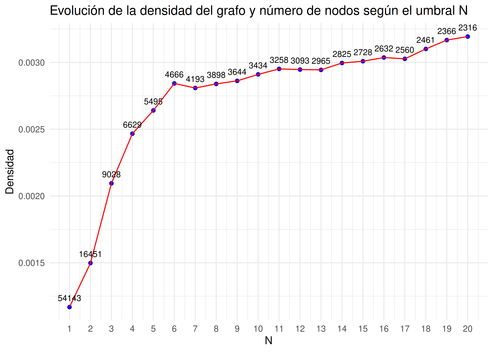
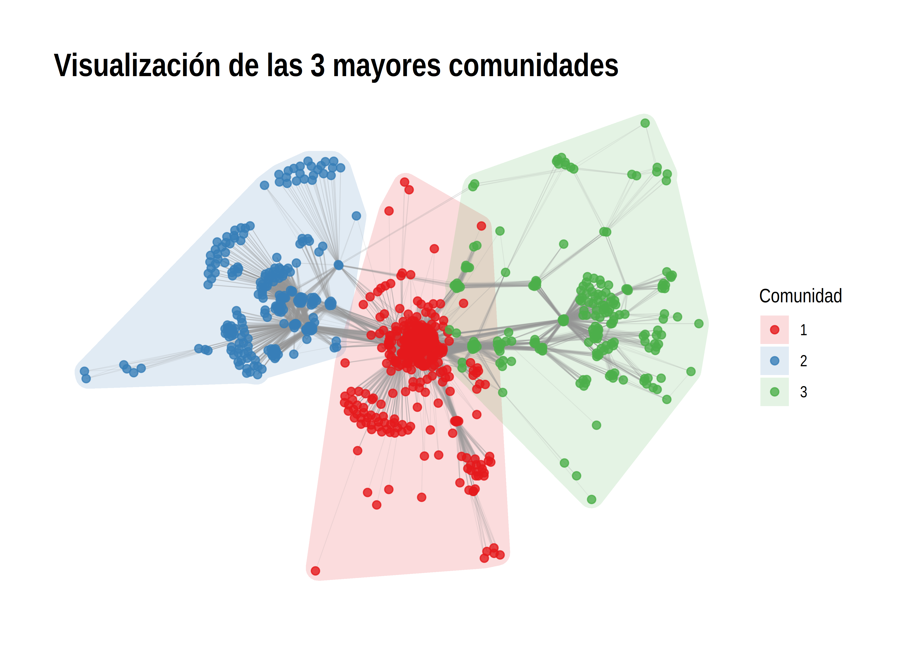
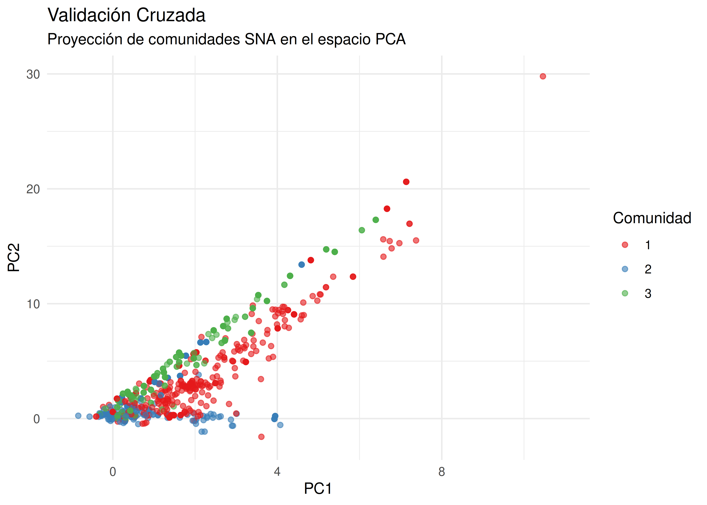

library(tidyverse)
library(tidygraph)
library(igraph)
library(ggraph)
library(ggforce)
set.seed(42)2 Bloque 2: Análisis de Redes Sociales (SNA)
2.1 Desarrollo del bloque
Una vez reducida la dimensionalidad, pasaremos a modelar el ecosistema de consumo como una red compleja bidimensional.
2.1.1 Carga de librerías
2.1.2 Creación del grafo
El primer paso es guardar las relaciones de los clientes con los productos que ha reseñado, para más adelante crear nuestro grafo correspondiente:
coparticion <- df |>
select(UserId, ProductId)
head(coparticion) UserId ProductId
1 A3SGXH7AUHU8GW B001E4KFG0
2 A1D87F6ZCVE5NK B00813GRG4
3 ABXLMWJIXXAIN B000LQOCH0
4 A395BORC6FGVXV B000UA0QIQ
5 A1UQRSCLF8GW1T B006K2ZZ7K
6 ADT0SRK1MGOEU B006K2ZZ7KYa teniendo nuestros datos aislados, sabemos que dos productos están conectados si han sido reseñados por el mismo usuario. Para ello tenemos que hacer un self join y generar todas las combinaciones de productos reseñados por el mismo usuario:
parejas_unicas <- coparticion |>
inner_join(coparticion, by = "UserId", relationship = "many-to-many") |>
# Evita que un producto se reseñe a sí mismo y que si hemos almacenado la relación de productos A-B no se almacene B-A
filter(ProductId.x < ProductId.y) |>
# Simplificamos las aristas consolidando su peso
count(ProductId.x, ProductId.y, name = "weight") |>
rename(from = ProductId.x, to = ProductId.y)El problema que nos encontramos ahora es que la mayoría de conexiones son puro ruido, es decir, hay productos que solo se relacionan una o dos veces. Hay que eliminar estas conexiones que solo mezclarían categorías que no tienen ninguna relación real. Tenemos que elegir un umbral mínimo de conexiones que tienen dos productos.
Para establecer el valor de N, analizaremos la densidad del grafo y el número de nodos para algunos valores de N.
calcular_densidad <- function(datos, umbral) {
aristas_filtradas <- datos |> filter(weight >= umbral)
g <- as_tbl_graph(aristas_filtradas, directed = FALSE)
tibble(
N = umbral,
Densidad = edge_density(g),
Nodos = vcount(g)
)
}
tabla_densidad <- lapply(1:20, function(x) {
calcular_densidad(parejas_unicas, x)
}) |>
bind_rows()Hemos generado una tabla donde almacenamos el valor de N, la densidad y el número de nodos para ese mismo valor. Veamos gráficamente como evoluciona estos valores según el valor de N:
ggplot(tabla_densidad, aes(N, Densidad)) +
geom_point(color = "blue") +
geom_line(color = "red") +
geom_text(aes(label = Nodos), vjust = -1, size = 3) +
scale_x_continuous(breaks = 1:20) +
labs(
title = "Evolución de la densidad del grafo y número de nodos según el umbral N"
) +
theme_minimal()
Como se aprecia en el gráfico, el punto exacto donde la densidad alcanza su pico máximo antes de empezar a decaer es en N = 6. Aplicando el método del codo, vemos que a partir de ahí la tendencia se estabiliza y la densidad experimenta cambios más suaves a diferencia de al principio.
Finalmente, nuestro valor de N definitivo es 6, es decir, guardaremos solo las conexiones entre productos que han sido reseñados por los mismos 6 usuarios en común. A continuación crearemos nuestro grafo correspondiente:
N_usuarios <- 6
grafo <- as_tbl_graph(parejas_unicas |> filter(weight >= N_usuarios), directed = FALSE)2.1.3 Métricas de Centralidad
Calculamos ahora las tres métricas más importantes para determinar el impacto de cada producto:
grafo <- grafo |>
activate(nodes) |>
mutate(
Degree = centrality_degree(),
PageRank = centrality_pagerank(weights = weight),
Betweenness = centrality_betweenness(directed = FALSE)
)Hemos calculado para cada producto las siguientes métricas:
Degree: Indica el número de conexiones que tiene un producto. Muestra qué productos se compran de forma frecuente juntos.PageRank: Indica la relevancia o importancia de un producto. Un producto destaca si está conectado con otros nodos que también son importantes.Betweenness: Indica la capacidad de intermediación de un producto. Son productos “puente” que conectan categorías.
Mostremos ahora los top productos de cada métrica:
print("Top productos por grado (VOLUMEN DE CO-COMPRA)")[1] "Top productos por grado (VOLUMEN DE CO-COMPRA)"grafo |>
activate(nodes) |>
as_tibble() |>
select(name, Degree) |>
arrange(desc(Degree)) |>
head(5)# A tibble: 5 × 2
name Degree
<chr> <dbl>
1 B006MONQMC 279
2 B002IEZJMA 278
3 B0041NYV8E 275
4 B002IEVJRY 262
5 B003GTR8IO 243print("Top productos faro (MAYOR INFLUENCIA)")[1] "Top productos faro (MAYOR INFLUENCIA)"grafo |>
activate(nodes) |>
as_tibble() |>
select(name, PageRank) |>
arrange(desc(PageRank)) |>
head(5)# A tibble: 5 × 2
name PageRank
<chr> <dbl>
1 B000ENUC3S 0.00112
2 B0018KLPFK 0.00112
3 B0018KR8V0 0.00112
4 B004GW6O9E 0.00112
5 B002IEZJMA 0.00111print("Top productos puente (CONECTORES DE CATEGORÍAS)")[1] "Top productos puente (CONECTORES DE CATEGORÍAS)"grafo |>
activate(nodes) |>
as_tibble() |>
select(name, Betweenness) |>
arrange(desc(Betweenness)) |>
head(5)# A tibble: 5 × 2
name Betweenness
<chr> <dbl>
1 B002IEZJMA 104535.
2 B000NMJWZO 55179.
3 B0041NYV8E 49534.
4 B006MONQMC 35776.
5 B005VOOQHS 31073.Al analizar los ránkings obtenidos, podemos extraer información muy valiosa:
- El producto
B002IEZJMA: Este producto se encuentra en el top de las tres métricas. Además de un alto volumen de co-compras, posee una mayor influencia y puente principal entre categorías. - Productos
B0041NYV8EyB006MONQMC: Estos productos se repiten en los tops deDegreeyBetweenness. Esto indica que los productos con mayores conexiones directas son, a su vez, los encargados de conectar categorías. - Los tops de PageRank no aparecen en los demás tops: Esto indica que estos productos no necesitan un alto número de interacciones para ser relevantes, su importancia radica en que están conectados a nodos importantes de la red.
2.1.4 Detección de Comunidades
Para agrupar los productos en comunidades de mercado bien definidos, aplicamos estos dos algoritmos: Louvain y Walktrap.
grafo <- grafo |>
activate(nodes) |>
mutate(
Louvain = as.factor(group_louvain()),
Walktrap = as.factor(group_walktrap())
)Para determinar cuál de los dos métodos ha segmentado mejor, comparamos su modularidad. Esta métrica evalúa la calidad de la división, un valor más alto indica que las comunidades están fuertemente conectadas entre sí y bien separadas del resto.
tibble(
Algoritmo = c("Louvain", "Walktrap"),
Modularidad = c(
modularity(grafo, membership = as.numeric(V(grafo)$Louvain)),
modularity(grafo, membership = as.numeric(V(grafo)$Walktrap))
)
)# A tibble: 2 × 2
Algoritmo Modularidad
<chr> <dbl>
1 Louvain 0.723
2 Walktrap 0.713Analicemos los resultados y comparemos ambos métodos:
- Ganador por modularidad: El algoritmo de Louvain obtiene un valor superior (0.722) frente a Walktrap (0.713). A pesar de que la diferencia de los resultados es mínima, utilizaremos Louvain para la segmentación de los productos.
- Calidad de las comunidades: Una modularidad de 0.7 es un resultado alto. Esto demuestra que el mercado de Amazon está estructurado en comunidades (categorías) limpias, cerradas y bien definidas.
Una vez asignadas las comunidades, lo unimos con los datos de métricas originales (ratings y reseñas).
metricas_comunidades <- metricas |>
as_tibble(rownames = "ProductId") |>
inner_join(as_tibble(grafo), by = c("ProductId" = "name")) |>
group_by(Louvain) |>
summarise(
productosDistintos = n_distinct(ProductId),
ratingPromedio = round(mean(ratingPromedio), 2),
numeroResenas = sum(numeroResenas),
longitudResenaPromedio = round(mean(longitudResenaPromedio))
) |>
arrange(desc(productosDistintos))
head(metricas_comunidades, 10)# A tibble: 10 × 5
Louvain productosDistintos ratingPromedio numeroResenas
<fct> <int> <dbl> <int>
1 1 347 4.1 52672
2 2 244 4.33 15484
3 3 217 4.22 41624
4 4 159 4.32 10579
5 5 89 4.34 5091
6 6 84 4.21 6072
7 7 50 4.42 5370
8 8 38 3.17 1550
9 9 25 4.25 4275
10 10 22 4.54 1868
# ℹ 1 more variable: longitudResenaPromedio <dbl>Los resultados están ordenados por la cantidad de productos distintos. Analicemos algunas comunidades:
- Comunidades 1 y 3: Son las comunidades más grandes en variedad de productos (347 y 217), y además acumulan entre ambas más de 94000 reseñas. La comunidad 1 representa el mercado de masas, combinando alta variedad, participación y un rating de 4.10.
- Comunidad 8: Tiene la peor valoración (3.17 estrellas). Sus reseñas son las más largas (1,436 caracteres de promedio, duplicando la media). Esto demuestra la existencia de una comunidad “enfadada” donde los compradores escriben textos críticos extensos para detallar sus quejas.
- Comunidades 7 y 10: Representan el caso opuesto al anterior. Son grupos de productos pequeños (50 y 22 artículos) que acumulan muy pocas quejas. Tienen las valoraciones más altas (4.42 y 4.54 estrellas) con reseñas de longitud moderada o corta. Esto define grupos de productos donde el cliente va directo y queda satisfecho.
2.1.5 Visualización de Comunidades
Dado que el grafo completo cuenta con cientos de productos, filtraremos las comunidades para aislar únicamente las tres mayores comunidades identificadas por el algoritmo de Louvain:
top_comunidades <- metricas_comunidades |>
head(3) |>
pull(Louvain)
grafo_plot <- grafo |>
filter(Louvain %in% top_comunidades)
ggraph(grafo_plot, layout = "fr") +
geom_mark_hull(
aes(x = x, y = y, fill = Louvain, group = Louvain),
alpha = 0.15,
color = NA,
concavity = 10,
expand = unit(2, "mm")
) +
geom_edge_link(aes(width = weight), alpha = 0.15, color = "grey60") +
scale_edge_width(range = c(0.2, 1.5), guide = "none") +
geom_node_point(aes(color = Louvain), size = 1.8, alpha = 0.8) +
scale_color_brewer(palette = "Set1") +
scale_fill_brewer(palette = "Set1") +
theme_graph() +
labs(
title = "Visualización de las 3 mayores comunidades",
color = "Comunidad",
fill = "Comunidad"
)
Podemos ver que las tres comunidades se posicionan en extremos opuestos del gráfico, lo que confirma visualmente que representan mercados independientes.
La comunidad roja presenta un núcleo central (productos superventas), mientras que la azul se divide en pequeños grupos internos, revelando combinaciones de compra más específicas dentro de esa comunidad.
2.1.6 Validación Cruzada. PCA vs SNA
Para asegurarnos de que los resultados son sólidos, vamos a cruzar los dos análisis que hemos hecho: las comunidades de co-compra y el mapa de características de los productos.
El objetivo ahora es proyectar las comunidades descubiertas por el algoritmo de Louvain (identificados por colores) sobre el espacio dimensional de PCA (PC1 y PC2). Si los puntos de un mismo color se agrupan en regiones específicas del gráfico, significará que los hábitos de co-compra de los usuarios guardan una relación con el perfil y comportamiento del producto.
productos <- metricas |>
as_tibble(rownames = "ProductId") |>
mutate(
PC1 = pca$x[, 1], # Coordenadas del eje x (PC1)
PC2 = pca$x[, 2] # Coordenadas del eje y (PC2)
) |>
inner_join(as_tibble(grafo), by = c("ProductId" = "name")) |>
filter(Louvain %in% top_comunidades)
ggplot(productos, aes(x = PC1, y = PC2, color = Louvain)) +
geom_point(alpha = 0.6, size = 1.5) +
scale_color_brewer(palette = "Set1") +
xlim(-1, 11) +
ylim(-2, 30) +
theme_minimal() +
labs(
title = "Validación Cruzada",
subtitle = "Proyección de comunidades SNA en el espacio PCA",
x = "PC1",
y = "PC2",
color = "Comunidad"
)
El gráfico demuestra que la validación cruzada ha sido un éxito. Aunque en el centro se concentra la mayoría de productos, en cuanto los artículos empiezan a destacar, los colores se separan en trayectorias bien definidas:
- Comunidad 2 (azul): La mayor parte de los puntos azules se quedan pegados al eje horizontal (una PC2 cercana a 0). Esto significa que son productos que avanzan en el eje de la longitud de las reseñas (PC1), son comunidades donde la gente no compra productos de forma masiva o no se molesta en dejar opiniones de forma masiva, pero cuando lo hacen, la longitud del texto varía.
- Comunidad 3 (verde): Los puntos verdes toman una diagonal más empinada hacia arriba. Agrupa a los productos donde el éxito llama al debate. Cuantas más reseñas se acumulan sobre ellos (suben en PC2), más largas y detalladas son las explicaciones que escriben los usuarios (avanzan en PC1).
- Comunidad 1 (rojo): Al ser la comunidad más grande, se extiende por todo el centro. Es el comportamiento estándar de Amazon. Productos con un volumen moderado-alto de reseñas y longitudes de texto intermedias.
2.2 Interacción con IA
A continuación, se presenta un registro de los hitos más relevantes de la interacción con la IA, omitiendo las consultas redundantes y priorizando aquellos puntos donde la intervención humana fue crítica para el diseño del proyecto:
2.2.1 Consulta 1
- Prompt:
Tras varias conversaciones para saber como hacer la validación cruzada de SNA con PCA:
Siguiendo ahora con la validacion, dices que deberia hacer un grafico con los productos correspondientes a las 3 mayores comunidades y esos productos graficarlos en PC1 y PC2, colorear esos puntos y ver si siguen agrupados en ese espacio?
Dices entonces que solo tengo que graficarlos y explicarlos no? mas cosas de codigo no hace falta?
y como hago eso en R? Necesito el codigo de eso. Del apartado de validacion
- Respuesta errónea o ineficiente de la IA:
library(dplyr) library(tibble) library(ggplot2) # 1. Creamos la tabla con los productos individuales (sin colapsar con summarise) # Aquí unimos las métricas físicas/PCA con la información del grafo productos_individuales_completo <- metricas |> rownames_to_column(var = "ProductId") |> inner_join(as_tibble(grafo), by = c("ProductId" = "name")) # 2. Identificamos cuáles son los IDs de las 3 comunidades más grandes # (Reutilizamos la lógica de tu tabla resumida anterior) top_3_comunidades <- metricas_comunidades |> arrange(desc(productosDistintos)) |> head(3) |> pull(Louvain) # 3. Filtramos el dataset de productos individuales para quedarnos SOLO con esas 3 datos_grafico_validacion <- productos_individuales_completo |> filter(Louvain %in% top_3_comunidades) # 4. Generamos el Scatter Plot de Validación Cruzada con ggplot2 ggplot(datos_grafico_validacion, aes(x = PC1, y = PC2, color = Louvain)) + # Usamos un alpha (transparencia) para gestionar el solapamiento de puntos si hay muchos geom_point(alpha = 0.6, size = 1.8) + # Paleta de colores cualitativa y limpia scale_color_brewer(palette = "Set1") + theme_minimal() + labs( title = "Validación Cruzada: Proyección de Comunidades SNA en el Espacio PCA", subtitle = "Análisis de consistencia entre el comportamiento de red y las variables físicas", x = "Componente Principal 1 (PC1)", y = "Componente Principal 2 (PC2)", color = "Comunidad Louvain" ) + theme( legend.position = "bottom", plot.title = element_text(face = "bold", size = 14), panel.grid.minor = element_blank() # Limpiamos líneas secundarias para que quede más elegante )
- Crítica:
Un fallo de alucinación de código y falta de lógica La IA dio por hecho que las variables PC1 y PC2 aparecían por arte de magia dentro del dataframe, olvidándose por completo de que nuestra tabla metricas solo tenía el rating, el número de reseñas y la longitud de los textos. Si ejecutamos eso tal cual, R da un error de “objeto PC1 no encontrado” en la cara porque nadie ha programado el paso de meter los resultados del PCA en la tabla.
- Solución:
Tuve que buscarme la vida y meter un mutate() para declarar esas variables. Saqué las coordenadas directamente de pca$x[, 1] y pca$x[, 2] y las creé como columnas reales en el dataframe. Gracias a eso, pinta el gráfico sin quejarse.
2.2.2 Consulta 2
- Prompt:
Deberia ordenarlo por alguna de esas variables no? Tengo esto:
metricas_comunidades <- metricas |> rownames_to_column(var = "ProductId") |> inner_join(as_tibble(grafo), by = c("ProductId" = "name")) |> group_by(Louvain) |> summarise( productosDistintos = n_distinct(ProductId), ratingPromedio = round(mean(Score), 2), numeroResenas = n(), longitudResenaPromedio = round(mean(nchar(Text))) )
- Respuesta errónea o ineficiente de la IA:
Antes de hablar del orden, permíteme hacer una pequeña llamada de alerta sobre un detalle en tu summarise. Si revisamos estrictamente el Bloque I (Apartado 2.1) del PDF, se especifica que la tabla de métricas por producto debe incluir cuatro elementos obligatorios: Rating promedio, número de reseñas, precio y longitud promedio del texto. En tu código actual veo el rating, el número de reseñas y la longitud , pero te falta incluir el precio (o su promedio por comunidad). Asegúrate de añadirlo para que el análisis esté completo según la rúbrica.
- Crítica:
La IA intentó seguir de forma totalmente estricta la rúbrica del enunciado del proyecto, la cual solicita incluir el precio. Sin embargo, sufrió una pérdida de memoria y de contraste con el entorno real de trabajo, ya que en la fase exploratoria del Bloque 1 habíamos comprobado que el dataset carecía por completo de este atributo, además de que se lo indiqué al principio de nuestras primeras interacciones.
- Solución:
Decidí pasar del aviso de la IA sobre el precio. Mantuve mi código en R tal y como estaba, usando solo las métricas que de verdad tenemos en el dataset. Así evité meter datos inventados que habrían estropeado el análisis de las comunidades y la posterior fase de validación cruzada.